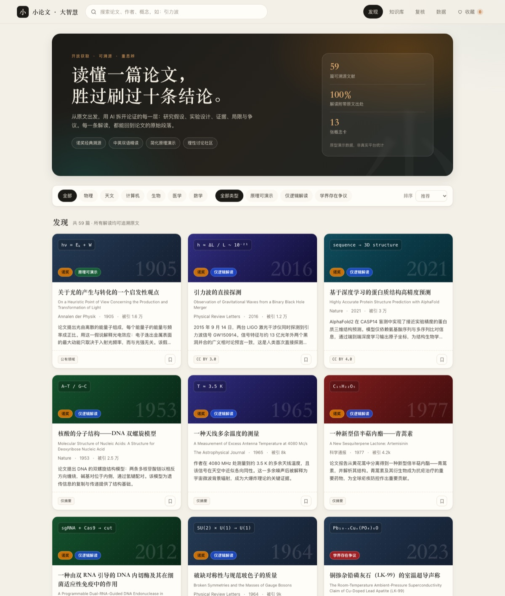
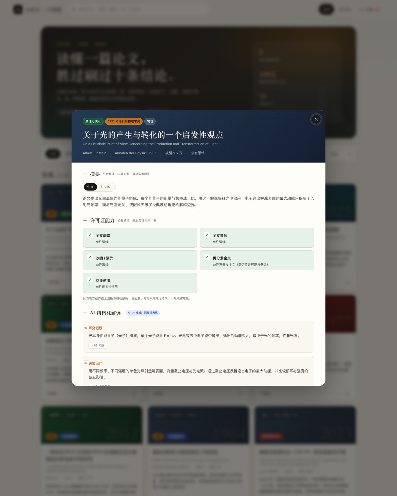
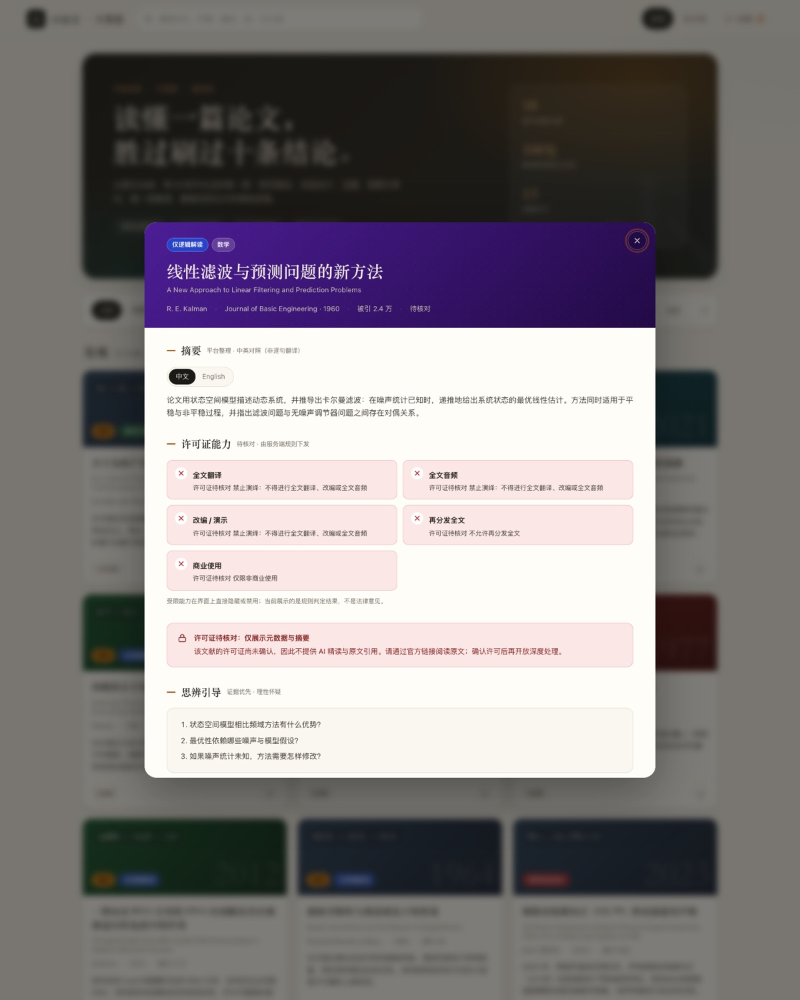
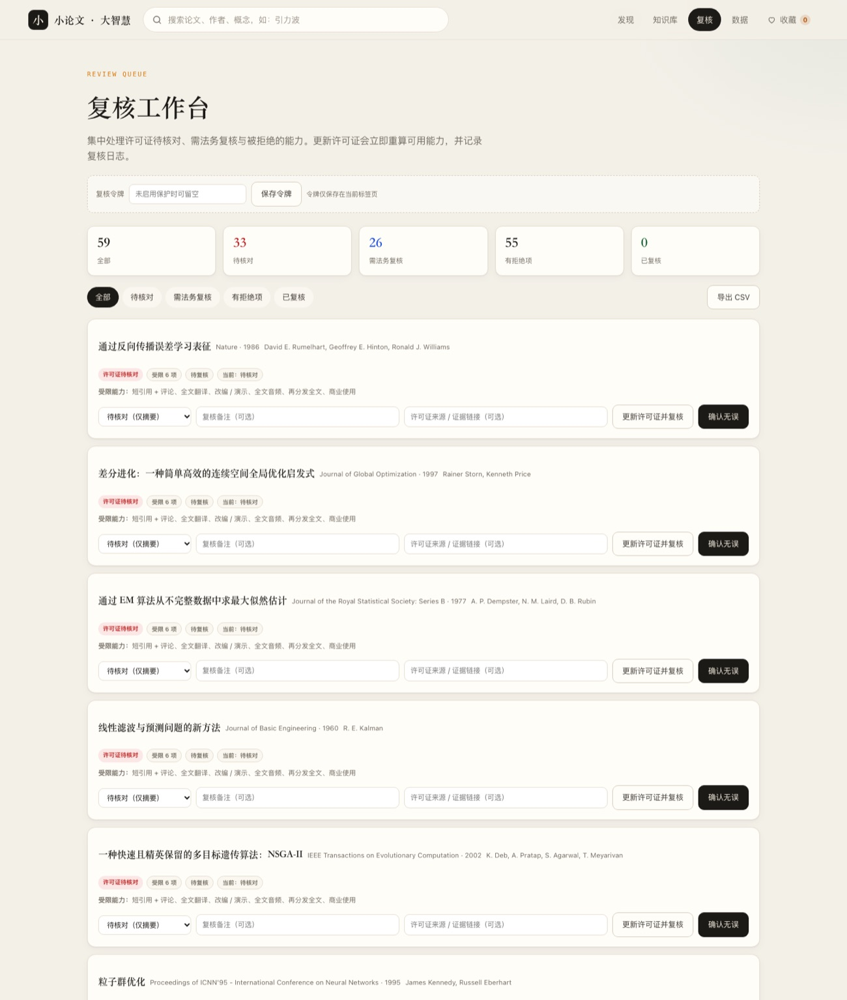
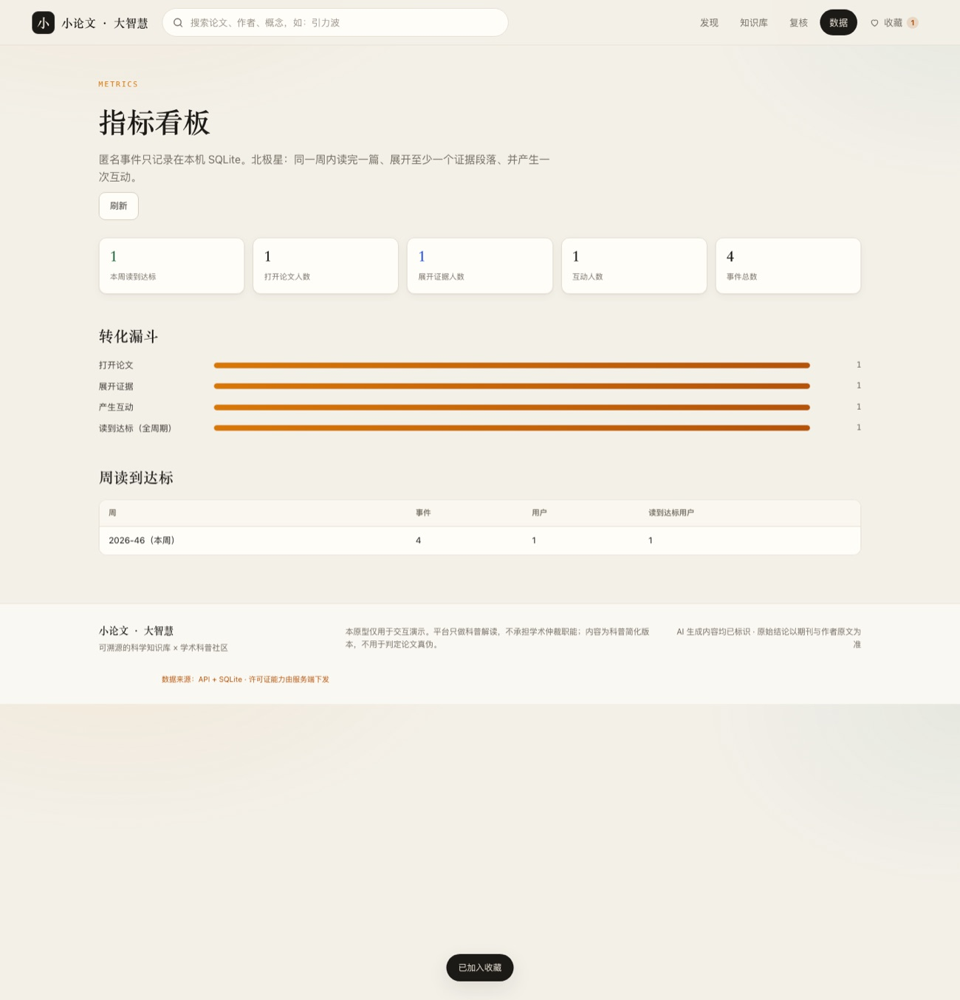

Open Access · Traceable · Evidence-first
小论文 · 大智慧
可溯源的科学知识库 × 学术科普信息流
不只告诉你科学家发现了什么，还给你看他们是怎么证明的。
开放获取论文章节级溯源许可证感知重思辨社区
小论文 · 大智慧01 / 12
Problem
结论易得，证据难寻
科学传播在三个环节同时断裂。
01 / 大众
二手转述
依赖媒体与短视频，多层传播后失真；标题党与伪科学更容易获得流量。
02 / 科研新手
阅读门槛
外文术语、实验设计、统计方法构成壁垒，长期只读摘要与结论。
03 / 工具
链路割裂
数据库只有原文，短视频缺少论证，AI 工具又只服务专业用户。
问题02 / 12
Solution
用知识库做骨架，用信息流做分发
知识库层论文卡、概念卡、专题合集、引用与争议关系。
解读层双语摘要、论证拆解、简化演示、研究局限提示。
信息流层卡片流、学术拼图式推荐、单篇讨论区。
思辨层变量控制、适用范围、替代解释等引导问题。
核心原则：每一条解读都能回到论文的具体章节；每一项能力都受许可证约束。
方案03 / 12
Demo · Discover
59 篇可溯源文献，公式与许可证在第一屏
59 篇文献、13 张概念卡、7 个专题。
诺奖溯源 + AI 必读 Top50 两条策展线。
每张卡片显示期刊、年份、许可证与内容类型标签。
搜索、学科与类型筛选，不只靠推荐。

产品演示 · 发现04 / 12
Demo · Evidence
一篇论文的五段式证据链
AI 辅助整理 · 待复核
研究假设 → 实验设计 → 核心结论 → 研究局限 → 学界争议。
每段带章节级出处；点击 §3 记录一次“展开证据”。
许可证能力面板逐项显示翻译、音频、改编、商业是否允许。
不冒充人工结论，明确标注待复核。

产品演示 · 证据链05 / 12
Compliance
合规不是免责声明，而是进入代码的规则
CC BY-NC：禁止商业使用，不能进入会员/付费路径。
CC BY-ND：禁止全文翻译、改编与全文音频。
预印本：只做元数据与评论，不做全文翻译。
未知许可证 fail-closed：仅展示元数据。
许可来源、复核状态与审计日志全部留痕。

许可证06 / 12
Workflow
复核工作台：把法务与编辑变成工作流
33 篇待核对、26 篇需法务复核、55 篇有受限能力。
选择新许可证 → 立即重算能力 → 写入 review_log。
记录许可证来源、复核历史，支持 CSV 导出。
可选令牌保护，避免复核接口裸奔。

复核工作台07 / 12
Metrics
北极星：用户是否真的读到了证据
6 类匿名事件：打开、读完、展开证据、溯源点击、收藏、评论。
同一周内「读完 + 展开证据 + 一次互动」才算读到达标。
转化漏斗 + 12 周趋势，用于验证而不是自嗨。
匿名、本地，不采集账号与个人信息。

指标08 / 12
Differentiation
不是又一个 AI 问答，也不是又一个论文库
| 维度 | 通用 AI 问答 | 短视频科普 | 学术数据库 | 本产品 |
|---|---|---|---|---|
| 溯源 | 弱 | 无 | 原文 | 章节级出处 |
| 许可证 | 不可见 | 不考虑 | 不适用 | 能力逐项下发 |
| 结构化 | 对话式 | 故事化 | 文献列表 | 论文 × 概念 × 证据 |
| 面向大众 | 是 | 是 | 否 | 是 |
| 讨论 | 泛化 | 评论区 | 无 | 单篇论文讨论 |
差异化09 / 12
Progress
已经跑通“文档—数据—API—前端—许可证—复核—指标”
59篇论文（演示 18 + 本地 Top50 41）
21篇结构化解读，全部标注待复核
26项自动化测试全部通过
33 / 26待核对 / 需法务复核
零依赖 Node + SQLite 原型；PDF 与本地语料不入仓库；解读为平台整理，非生产级 AI 流水线。
当前进展10 / 12
Roadmap
下一步用用户测试决定是否进入 M3
M0 · DONE
方案与原型
产品/技术文档、交互原型、许可证校验器与演示脚本。
M1 · PROTOTYPE
最小闭环
SQLite 数据层、API、Top50 内容、章节级解读与讨论。
M2 · CURRENT
知识库与指标
概念卡、复核工作台、事件埋点与北极星看板；待 5 人测试。
M3 · NEXT
增长验证
创作者投稿、推荐、机构试点、会员内测。
路线图11 / 12
Closing
一篇小论文，
蕴藏世间大智慧。
我们不追求直接鉴别所有学术造假，而是给普通人一套看懂科学、独立思考的工具，让严谨的科学精神走出实验室，走进大众。
测试用户5–10 名本科生、研究生、科技爱好者
法务 / 编辑抽样复核许可证与摘要、解读内容
试点场景高校图书馆、中学科学课、科普机构
谢谢 · 本地演示 http://localhost:812312 / 12